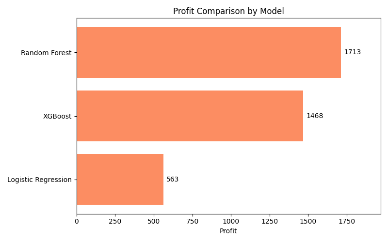

This project applies machine learning models to classify wines as High (Premium) or Low (Normal) quality.
Not all prediction errors have the same impact. Misclassifying a low-quality wine as premium is costly, so the objective is to minimize false positives and maximize profit.
Random Forest achieved the highest profit by effectively reducing costly false positives.

The model with the best predictive metrics is not always the most valuable. This project highlights the importance of aligning machine learning decisions with business objectives.